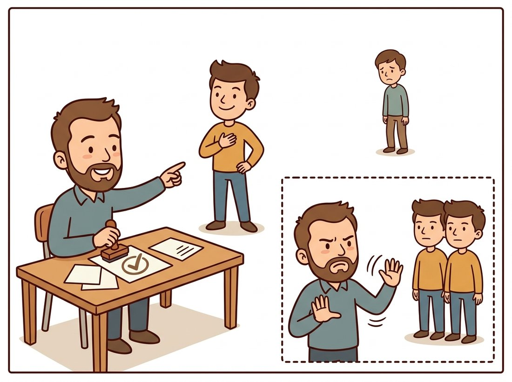

"Being almost as close as the winner sounds flattering until you learn about the ratio test. Apparently, my very existence disqualifies the match."
A Bitterly Disqualified Second-Nearest Neighbor
Matching descriptors is easy; the hard and valuable part is knowing which matches to distrust, and the single most cost-effective tool ever invented for that is comparing the best candidate against the second best. This section turns two piles of descriptors into a list of putative correspondences: brute-force and approximate nearest-neighbor search supply candidates, cross-checking and Lowe's ratio test filter out the liars, and what survives is clean enough for the geometric verification of Section 10.6 to finish the job. The ratio test costs one comparison per match and routinely removes the large majority of false matches; per line of code, it may be the highest-value test in classical vision. The talent-show scene below captures its single question: did the winner clearly beat the runner-up?

The chapter so far has been about single images: detect keypoints (Sections 10.1 and 10.2), describe them (Sections 10.3 and 10.4). Now, finally, two images meet. Image one contributes descriptors $\{\mathbf{d}_i\}$, image two contributes $\{\mathbf{e}_j\}$, and the task is to output pairs $(i, j)$ that name the same physical point. The entire design of the descriptors was aimed at making this moment simple: if description worked, corresponding points are nearby in descriptor space, and matching reduces to nearest-neighbor search. The catch, as always, is in what "nearby" fails to guarantee.
1. Nearest Neighbors and Their Lies Beginner
The baseline matcher could not be more direct: for each descriptor in image one, find the closest descriptor in image two (L2 distance for SIFT-family floats, Hamming for ORB-family bits, per Section 10.4), and declare a match. The problem is that nearest-neighbor search always returns an answer. A keypoint whose physical point is occluded in the second image, or outside its frame, still gets a nearest neighbor; it is just a meaningless one. A keypoint on a repetitive structure (one window among forty identical windows on a facade) gets a nearest neighbor that is genuinely similar and very possibly the wrong window. Raw nearest-neighbor output is typically polluted with tens of percent of such false matches, and downstream geometry is exquisitely sensitive to them.
Matching is therefore an exercise in filtering. Three filters do most of the work in practice, in increasing order of insight: an absolute distance threshold (weak, because "close" varies wildly between scenes and descriptors), the mutual cross-check, and the ratio test. Before reaching for any library, it is worth seeing the whole computation honestly in NumPy; the function below is the complete logic of a ratio-test matcher. Its one piece of arithmetic worth decoding is the distance line, which uses the identity $\lVert a - b \rVert^2 = \lVert a \rVert^2 + \lVert b \rVert^2 - 2\,a \cdot b$ to compute every pairwise squared distance with a single matrix product instead of a Python loop.
import numpy as np
def match_nn_ratio(d1: np.ndarray, d2: np.ndarray, ratio: float = 0.75):
"""Nearest-neighbor matching with Lowe's ratio test, pure NumPy."""
d1 = d1.astype(np.float32); d2 = d2.astype(np.float32)
# all pairwise squared distances: ||a||^2 + ||b||^2 - 2 a.b
dists = (d1**2).sum(1)[:, None] + (d2**2).sum(1)[None, :] - 2 * d1 @ d2.T
matches = []
for i, row in enumerate(dists):
j1, j2 = np.argsort(row)[:2] # best and second-best
if np.sqrt(max(row[j1], 0)) < ratio * np.sqrt(max(row[j2], 0)):
matches.append((i, j1)) # unambiguous: keep it
return matchesargsort, and the keep-only-if-clearly-best ratio rule that the rest of this section justifies.The function above is a dozen lines and materializes an $N \times M$ distance matrix that will not fit in memory for large keypoint sets. OpenCV's cv2.BFMatcher(norm) with knnMatch(d1, d2, k=2) replaces it one-for-one (roughly a 12-to-2 reduction) while computing distances blockwise with SIMD vectorization, handling Hamming distance for binary descriptors via XOR-popcount, and optionally running the mutual cross-check (crossCheck=True) inside the same call. Note the API constraint: crossCheck works with match() but not with knnMatch(k=2), so you choose cross-check or ratio test per call, not both at once.
2. The Cross-Check: Symmetry as a Filter Intermediate
The cross-check (mutual nearest neighbor) accepts a pair $(i, j)$ only if $j$ is the nearest neighbor of $i$ and $i$ is the nearest neighbor of $j$. The logic is symmetry: a true correspondence has no reason to prefer one direction. A spurious one usually arises when descriptor $i$ has no real partner, so its arbitrary nearest neighbor $j$ almost certainly has a better partner of its own. Cross-checking is cheap (run matching both ways, intersect) and typically removes a third to a half of false matches. It is the standard default when you cannot afford k-nearest-neighbor queries, and it composes well with everything else.
Cross-checking has one blind spot: it has no concept of ambiguity. On that facade of forty identical windows, descriptor $i$ and the wrong window $j$ can happily be each other's nearest neighbors, and the symmetry test waves the bad pair through. Detecting ambiguity needs a second opinion, which is exactly what the ratio test collects.
3. Lowe's Ratio Test Intermediate
Here is the question the ratio test asks: how much better is the best candidate than the runner-up? Formally, with $d_1$ the distance from a query descriptor to its nearest neighbor and $d_2$ the distance to the second-nearest, accept the match only if
$$ \frac{d_1}{d_2} \;<\; \tau, \qquad \tau \approx 0.7 \text{ to } 0.8. $$
The reasoning is a small gem of practical statistics. If the match is correct, $d_1$ is drawn from the distribution of "same point, different photo" distances: small, by descriptor design. The second-nearest neighbor, meanwhile, is almost surely some unrelated point, so $d_2$ is a sample from the background distribution of "different points" distances. A correct match therefore shows a wide gap between $d_1$ and $d_2$. If the match is wrong or ambiguous, $d_1$ and $d_2$ are both samples from the background (or both from a set of look-alikes), and the ratio crawls toward 1. The second-nearest neighbor acts as a per-query, self-calibrating estimate of what "meaninglessly close" looks like, which is why the ratio test crushes any fixed absolute threshold: it adapts to the scene, the descriptor, and even the individual keypoint. Figure 10.5.1 draws the two situations.
The ratio test never decides whether a match is good; it decides whether the matcher had any business choosing at all. That distinction explains both its power and its blind spot. Power: it adapts per keypoint with zero training and rejects precisely the matches no descriptor could resolve. Blind spot: a confidently wrong match (the descriptor genuinely looks like the wrong place, with nothing similar nearby) sails through at a low ratio. Those survivors are why Section 10.6 exists: ambiguity is filtered here, in descriptor space; correctness is verified there, in geometric space.
In the 2004 SIFT paper, Lowe quantified the test on a large ground-truth set: at $\tau = 0.8$, the ratio test discarded about 90 percent of false matches while sacrificing under 5 percent of correct ones. Practitioners since have mostly tightened it to 0.7 to 0.75 for geometry pipelines (precision matters more when RANSAC iterations are at stake) and loosened it toward 0.8 for retrieval. The standard recipe, end to end, looks like this:
import cv2
img1 = cv2.imread("ridge_left.jpg", cv2.IMREAD_GRAYSCALE)
img2 = cv2.imread("ridge_right.jpg", cv2.IMREAD_GRAYSCALE)
sift = cv2.SIFT_create(nfeatures=3000)
k1, d1 = sift.detectAndCompute(img1, None)
k2, d2 = sift.detectAndCompute(img2, None)
bf = cv2.BFMatcher(cv2.NORM_L2) # no crossCheck with knnMatch
pairs = bf.knnMatch(d1, d2, k=2) # two best candidates per query
good = [m for m, n in pairs if m.distance < 0.75 * n.distance]
print(f"{len(pairs)} candidates -> {len(good)} after ratio test")
# 3000 candidates -> 642 after ratio test
vis = cv2.drawMatches(img1, k1, img2, k2, good, None,
flags=cv2.DrawMatchesFlags_NOT_DRAW_SINGLE_POINTS)
cv2.imwrite("matches.jpg", vis)cv2.drawMatches to render surviving correspondences for the visual sanity check no metric replaces.
Look at the printed numbers: four out of five candidates died at the gate. That attrition is normal and healthy. With ORB descriptors the same recipe applies with cv2.NORM_HAMMING; the ratio of two Hamming distances is just as meaningful as the ratio of two Euclidean ones.
The ratio test is two lines of arithmetic buried in the same 2004 paper that introduced the entire SIFT detector and descriptor, and by most counts it is the part that aged best. The detector got replaced, the descriptor got replaced, but "compare the winner to the runner-up" turns out to be such a good idea that learned matchers re-implemented it as a softmax and called it attention. Lowe's 0.8 was an empirical pick from one ground-truth set; a generation of practitioners has since argued over 0.7 versus 0.75 with the intensity normally reserved for tabs versus spaces.
4. Scaling Up: Approximate Search With FLANN Intermediate
Brute force compares every query against every candidate: fine at 2,000 versus 2,000, painful at 100,000 versus 10 million, which is where panorama engines, reconstruction farms, and image-retrieval systems operate. The classical answer is approximate nearest-neighbor search: index the candidate descriptors in a space-partitioning structure, accept a small probability of missing the true neighbor, gain orders of magnitude in speed. OpenCV bundles FLANN (Fast Library for Approximate Nearest Neighbors), with two indexes you should know: randomized KD-tree forests for float descriptors, and multi-probe locality-sensitive hashing (LSH) for binary ones.
# Float descriptors (SIFT family): forest of randomized KD-trees
FLANN_INDEX_KDTREE = 1
flann = cv2.FlannBasedMatcher(
dict(algorithm=FLANN_INDEX_KDTREE, trees=5),
dict(checks=50)) # leaves visited: the accuracy/speed dial
pairs = flann.knnMatch(d1, d2, k=2)
good = [m for m, n in pairs if m.distance < 0.75 * n.distance]
print(len(good)) # within a few matches of brute force
# Binary descriptors (ORB/AKAZE): multi-probe LSH instead
FLANN_INDEX_LSH = 6
index_params = dict(algorithm=FLANN_INDEX_LSH,
table_number=6, key_size=12, multi_probe_level=1)checks trading recall against speed, and the LSH parameter set for binary descriptors; at a few thousand keypoints brute force is often faster, so FLANN earns its keep only at scale.Watch the arithmetic break down. Brute-force matching is quadratic: querying 100,000 descriptors against a 10-million database is a trillion distance evaluations, minutes to hours on one core, repeated every query. A multi-probe LSH or KD-tree index answers each query by touching a few hundred candidates instead of ten million, turning that same search into milliseconds. The cost is a small, tunable recall loss (the true nearest neighbor is occasionally missed), and that single trade, accept a 1 to 2 percent miss rate to go from hours to milliseconds, is what makes web-scale image retrieval possible at all. A rule of thumb worth keeping: below roughly 5,000 descriptors per image, optimized brute force usually wins (no index to build, perfect recall); above that, and especially when one side of the match is a persistent database queried many times, approximate search dominates. The idea of organizing descriptors for sub-linear lookup grows in two directions later in the book: quantizing them into visual words for the retrieval systems of Chapter 16, and, in the modern era, embedding whole images for vector search, where Chapter 34's CLIP vectors play the role descriptors play here.
You now have every piece needed for a personal near-duplicate finder, the same idea the eleven-million-photo deduplication story below runs at scale. Point it at a folder of your own photos, extract SIFT (or ORB) descriptors for each image once and cache them, then build a single FLANN index over all descriptors. Given a query image, match its descriptors against the index, apply the ratio test, and tally how many surviving matches fall on each candidate image; the candidates with the most ratio-test survivors are your visual duplicates and crops. It finds the same shot edited, watermarked, or rescaled, which a file-hash comparison never catches. This complements the chapter's panorama lab rather than repeating it: the lab aligns two known-overlapping images, while this searches a whole collection for which images overlap at all. For a portfolio version, add a per-candidate inlier check with the RANSAC homography of Section 10.6 to reject look-alike-but-different scenes, exactly the cheap-filter-protects-expensive-verifier pattern the example below turns into a product.
Who: A data-platform engineer and one intern at an online marketplace aggregating third-party seller catalogs.
Situation: Sellers re-upload the same product photos with crops, watermarks, brightness tweaks, and slight rescales. Duplicate listings degraded search, and perceptual hashes caught only the near-exact copies, missing anything cropped or watermarked.
Problem: Eleven million images, a nightly batch window of four hours, and a false-merge budget near zero: wrongly merging two different products is a seller-relations incident, while a missed duplicate is merely untidy.
Decision: ORB descriptors (512 per image) indexed in a multi-probe LSH structure; candidate pairs from index lookups; each candidate pair then verified with the full recipe: ratio test at a strict 0.7, followed by a homography check requiring 40 geometric inliers (a preview of Section 10.6) before any merge.
Result: The nightly job processed the catalog in 3.1 hours on 16 CPU workers. Manual audit of 2,000 merges found one error, against 9 percent false merges for the hash-only baseline at equal recall. The strict ratio threshold alone removed 84 percent of candidate pairs before the expensive geometric stage ran.
Lesson: In large-scale matching, the ratio test's real job is economic: it is the cheap filter that protects the expensive verifier. Tuning it against the cost of the next pipeline stage, not in isolation, is what made the budget close.
5. What Matching Cannot Fix Beginner
Run the recipe on a real pair and inspect the drawn matches; you will find the picture mostly right and stubbornly imperfect. A few lines cross the image at impossible angles, connecting a roof corner to a fence post: confidently wrong matches the ratio test cannot see. Some correct correspondences died at the gate because the scene really does repeat. This is the honest endpoint of descriptor-space reasoning: every filter in this section judges matches one at a time, in isolation, and no amount of per-match cleverness can exploit the one constraint that binds all true matches together: they were produced by the same camera motion looking at the same rigid scene. Enforcing that collective constraint, and surviving the outliers that violate it, is robust model fitting, and it is where this chapter has been heading all along. The payoff arrives in Section 10.6, and it is what the two-view geometry of Chapter 13 will inherit.
The assumption this section never questioned (match each descriptor independently, then filter) is exactly what learned matchers abandoned. SuperGlue (2020) framed matching as joint assignment over all keypoints of both images, using a graph neural network with attention so every tentative match informs every other, plus an explicit dustbin for unmatchable points: the occlusion case raw nearest-neighbor search handles so badly. LightGlue (ICCV 2023) made that practical, with adaptive early stopping on easy pairs, and is now a standard component in reconstruction stacks. OmniGlue (CVPR 2024) adds foundation-model guidance to generalize across domains, and RoMa (CVPR 2024) drops sparse keypoints entirely in favor of dense learned matching. Notably, the ratio test's core insight (judge a match by its margin over alternatives) survives inside these systems as the softmax over candidate assignments; the heuristic became a differentiable layer. The attention machinery behind all of this is built in Chapter 22.
For each filter (absolute distance threshold, cross-check, ratio test), construct a concrete scenario where it accepts a false match that one of the other two would reject, and a scenario where it rejects a true match the others would keep. Repetitive facades, occluded regions, and low-texture scenes are fertile ground. Conclude with a recommendation: in what order would you compose the filters for a panorama stitcher, and which would you drop for a 30 fps tracker?
Create a ground-truthed pair by warping an image with a known homography (the tools of Chapter 5). Match SIFT descriptors with knnMatch(k=2), label each candidate correct or incorrect using the known warp (3-pixel tolerance), and plot two histograms of the ratio $d_1/d_2$: one for correct matches, one for incorrect. Mark the 0.7, 0.75, and 0.8 thresholds and report precision and recall at each. How closely does your incorrect-match histogram crowd toward 1.0, and does 0.75 look like the right default for your image?
Photograph (or synthesize) a scene with strong repetition: a tiled wall, a keyboard, a parking lot. Match it against a shifted view using (a) nearest neighbor only, (b) cross-check, (c) ratio test at 0.75, (d) cross-check plus ratio. For each, report match count and, by visual inspection of drawMatches output on 50 random survivors, an estimated precision. Where does the ratio test's rejection rate spike, and what fraction of the scene's true correspondences become unrecoverable by any per-match filter? Relate the result to why Section 10.6's geometric consensus is the only fix.